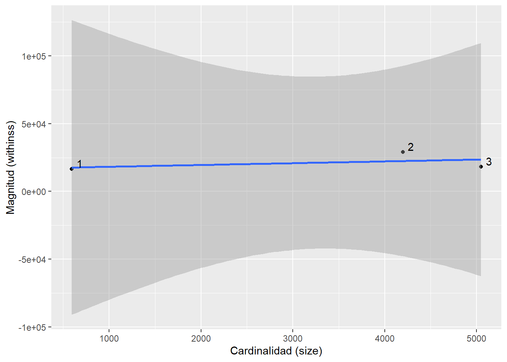

Las variables que eliminaremos, para poder hacer un agrupamiento óptimo, son todas aquellas variables cualitativas, que no neccesariamente tienen relación entre sí de película a película. Consiguientemente las variables que eliminaremos serán las siguientes:
genres
homePage
productionCompany
productionCompanyCountry
productionCountry
video
director
actors
actorsCharacter
originalTitle
title
originalLanguage
actorsPopularity
popularity
releaseDate
¿Vale la pena hacer clustering?
h <-hopkins(numericasNormComplete, method ='simple')
Al calcular el estadístico de Hopkins se obtuvo un valor $h=$0.9999786 , lo cual indica que vale la pena intentar un agrupamiento.
distancia <-dist(numericasNormComplete)# fviz_dist(distancia, show_labels = FALSE)
¿Cuántos clusters son necesarios?
Gráfica de codo
wss <-0for (i in1:10) { wss[i] <-sum(kmeans(numericasNormComplete, centers = i)$withins)}plot(1:10, wss, type ='b', xlab ='Cantidad de grupos', ylab ='WSS')
Partiendo tanto del gprafico de codo como del de Silueta, consideramos que la cantidad de Clusters necesarios son 3, ya que el gráfico de codo muestra que son necesarios 4 clusters, sin embargo el de Silueta establece que 2, por lo que consideramos que probablemente la cantidad de en medio, en este caso 3, será la más apropiada.
m <-data.frame(withinss = km$withinss, size=km$size)ggplot(m, aes(size, withinss))+geom_point()+geom_smooth(method ='lm')+labs(x ='Cardinalidad (size)', y ='Magnitud (withinss)')+geom_text_repel(label=rownames(m))
`geom_smooth()` using formula = 'y ~ x'

Clustering jerárquico
hc.cut<-hcut(numericasNormComplete, k=3, hc_method ="complete")fviz_dend(hc.cut, show_labels =FALSE, rect =TRUE)
Warning: The `<scale>` argument of `guides()` cannot be `FALSE`. Use "none" instead as
of ggplot2 3.3.4.
ℹ The deprecated feature was likely used in the factoextra package.
Please report the issue at <https://github.com/kassambara/factoextra/issues>.
En este caso el método de silueta nos indica que el algoritmo de clustering jerárquico realizó un mejor agrupamiento. Esto debido a que el algoritmo Kmeans tiene un valor de silueta de 0.17, mientras que el jerárquico tiene un valor de 0.93, el cual está bastante más cerca de 1 que el de Kmeans
Interpretacion
podemos notar que segun la kmedias, el grupo 3 es el grupo de los ultimos dos generos y predominan el 5 y 6, en el grupo 2 predominan los generos 1 y 2 y el en grupo 1 predominan los generos 3 y 4